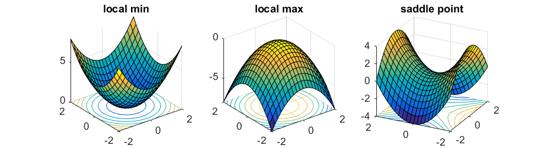
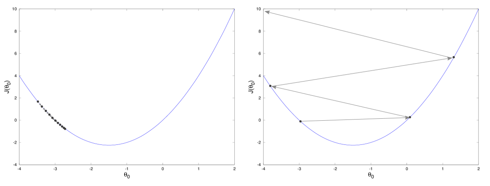

Gradient Descent#
We have seen that the training phase of a Machine Learning model can be expressed as an optimization problem: given a loss function
our goal is to find
For simple cases (like linear regression with one parameter), this minimization problem may admit a closed-form solution. In general, however, the loss function is non-linear, high-dimensional, and often non-convex, making analytic solutions impossible.
We therefore rely on iterative optimization algorithms, the most fundamental of which is Gradient Descent.
First-Order (and Second-Order) Optimality Conditions#
For unconstrained, differentiable problems \( \min_\Theta \mathcal{L}(\Theta) \):
First-Order Necessary Condition: any local minimizer \(\Theta^*\) satisfies
\[ \nabla_\Theta \mathcal{L}(\Theta^*) = 0. \]Points with zero gradient are called stationary points (they can be minima, maxima, or saddle points).
Second-Order Test (when \(\mathcal{L}\) is twice differentiable):
Let \(H(\Theta) = \nabla^2_\Theta \mathcal{L}(\Theta)\) be the Hessian.If \(H(\Theta^*)\) is positive definite, \(\Theta^*\) is a strict local minimum.
If \(H(\Theta^*)\) is indefinite, \(\Theta^*\) is a saddle point.
If \(\mathcal{L}\) is convex, then any stationary point is a global minimum. If it is strictly convex, the global minimizer is unique.

The Gradient Descent Algorithm#
Intuition#
The gradient of a differentiable function \(\nabla_\Theta \mathcal{L}(\Theta)\) points in the direction of the steepest ascent. If we want to minimize the function, we must move in the opposite direction. This leads to the update rule:
where \(\eta_k > 0\), \(k = 1, \dots, \texttt{maxit}\), is the learning rate (step size).
Therefore, the resulting algorithm reads:
Input: initial parameters \(\Theta^{(0)}\), learning rate schedule \(\{ \eta_k \}_k\), stopping criterion.
Repeat until the stopping criterion is satisfied:
Compute the gradient \(\nabla_\Theta \mathcal{L}(\Theta^{(k)})\).
Update parameters:
\[ \Theta^{(k+1)} = \Theta^{(k)} - \eta_k \, \nabla_\Theta \mathcal{L}(\Theta^{(k)}). \]
Note
The gradient descent algorithm is an example of descent methods:
where the descent direction \(p_k\) has to be chosen such that for any \(k \in \mathbb{N}\):
to assure convergence to a stationary point. Since for GD, \(p_k = - \nabla_\Theta \mathcal{L}(\Theta^{(k)})\), then the condition above is always satisfied:
Therefore, GD algorithm always converge to a stationary point in the limit of infinite iterations.
Warning
Do not confuse this full-batch Gradient Descent with Stochastic Gradient Descent (SGD), which will be introduced in the next chapter.
Selection of parameters#
Choice the initial iterate#
The Gradient Descent (GD) algorithm, require the user to input an initial iterate \(\Theta^{(0)} \in \mathbb{R}^n\). Theoretically, since GD has a global convergence proprerty, for any \(\Theta^{(0)}\) it will always converge to a stationary point of \(\mathcal{L}(\Theta)\), i.e. to a point such that \(\nabla_\Theta \mathcal{L}(\Theta) = 0\).
If \(\mathcal{L}(\Theta)\) is convex, then every stationary point is a (global) minimum of \(\mathcal{L}(\Theta)\), implying that the choice of \(\Theta^{(0)}\) is not really important, and we can always set \(\Theta^{(0)} = 0\). On the other side, when \(\mathcal{L}(\Theta)\) is not convex, we have to choose \(\Theta^{(0)}\) such that it is as close as possible to the right stationary point, to increase the chances of getting to that. If an estimate of the correct minimum point is not available, we will just consider \(\Theta^{(0)} = 0\) to get to a general local minima.
Step-Size Selection (Learning Rate)#
The choice of \(\{ \eta_k \}_k\) critically affects convergence.
Constant step size: given a value \(\eta\), set \(\eta_k = \eta\) \(\forall k = 1, \dots, \texttt{maxit}\). Simple, but problem-scale dependent. In particular:
If \(\eta\) is too small: GD does not converge as the iterates stucks before reaching convergence;
If \(\eta\) is too large: The iterates bounce back and forth around the minima, unable to reach it;
If \(\eta\) is just right: The GD method converge to a stationary point, with a speed proportional to how large \(\eta\) is.

Backtracking line search: for any \(k \in 1, \dots, \texttt{maxit}\), set \(\eta_k = \bar{\eta}\) and shrink by \(\beta \in (0,1)\) until the Armijo condition holds:
\[ \mathcal{L}(\Theta^{(k)} - \eta g^{(k)}) \;\le\; \mathcal{L}(\Theta^{(k)}) - c\,\eta_k\,\|g^{(k)}\|^2, \qquad g^{(k)}=\nabla_\Theta \mathcal{L}(\Theta^{(k)}),\; c\in(0,1). \]
Backtracking:
import numpy as np
def backtracking(L, grad_L, theta, eta0=1.0, beta=0.5, c=1e-4):
"""
Return a step size eta that satisfies the Armijo condition:
L(theta - eta*g) <= L(theta) - c * eta * ||g||^2
Inputs:
- L: R^n -> R
- grad_L: R^n -> R^d
- theta: current point (np.ndarray)
- eta0: initial step size
- beta: shrinking factor in (0,1)
- c: Armijo constant in (0,1)
"""
eta = eta0
g = grad_L(theta)
g_norm2 = np.dot(g, g)
while L(theta - eta * g) > L(theta) - c * eta * g_norm2:
eta *= beta
return eta
Stopping Criteria#
In practice, we cannot iterate forever. Common stopping criteria include:
The norm of the gradient is small:
\[ \|\nabla_\Theta \mathcal{L}(\Theta^{(k)})\| < \texttt{tol}_\mathcal{L}, \]meaning we are close to a stationary point.
The change in loss is negligible:
\[ |\mathcal{L}(\Theta^{(k+1)}) - \mathcal{L}(\Theta^{(k)})| < \texttt{tol}_{ES}. \]named early stopping In ML practice (usually estimated on the validation set).
The parameter update is small:
\[ \|\Theta^{(k+1)} - \Theta^{(k)}\| < \texttt{tol}_\Theta. \]A maximum number of iterations \(\texttt{maxit}\) is reached.
Ill-Conditioning and Geometry#
Ill-conditioning manifests as elongated level sets and zig-zagging GD trajectories, which makes hard for GD to reach convergence.
Given \(0<\lambda_1\ll\lambda_2\), consider the loss function:
\[ \mathcal{L}(\Theta) = \frac{1}{2} \lambda_1 \Theta_1^2 + \lambda_2 \Theta_2^2, \]
The level sets are ellipses whose axes scale with \(\lambda_1^{-1/2}\) and \(\lambda_2^{-1/2}\). When the ratio \(\lambda_2/\lambda_1\) is large, Gradient Descent with a fixed \(\eta\) progresses slowly and “zig-zags” across narrow valleys.
Exercise (condition number intuition; left-multiplication):
Sketch the level sets of \(\mathcal{L}(\Theta)=\tfrac{1}{2}\,\Theta^\top A\,\Theta\) for \(A=\mathrm{diag}(\lambda_1,\lambda_2)\).
Level-set plot helper:
import numpy as np
import matplotlib.pyplot as plt
def quad_levelsets(A, xlim=(-3,3), ylim=(-3,3), ngrid=400, ncontours=12, title=None):
xs = np.linspace(xlim[0], xlim[1], ngrid)
ys = np.linspace(ylim[0], ylim[1], ngrid)
X, Y = np.meshgrid(xs, ys)
Z = 0.5*(A[0,0]*X**2 + 2*A[0,1]*X*Y + A[1,1]*Y**2) # theta^T A theta, left-multiplied convention
cs = plt.contour(X, Y, Z, levels=ncontours)
plt.clabel(cs, inline=True, fontsize=8)
plt.axhline(0, lw=0.5, color='k')
plt.axvline(0, lw=0.5, color='k')
plt.gca().set_aspect('equal', 'box')
if title:
plt.title(title)
plt.xlabel(r'$\theta_1$')
plt.ylabel(r'$\theta_2$')
plt.grid(alpha=0.2)
plt.show()
# Example: ill-conditioned ellipse
A = np.diag([1.0, 25.0]) # lambda1 << lambda2
quad_levelsets(A, title='Level sets of 0.5 * theta^T A theta')
Limitations of Pure Gradient Descent#
Despite its usefulness, Gradient Descent has several drawbacks:
Computationally expensive: computing the gradient requires scanning the entire dataset at every step.
Learning rate sensitivity: too small = slow convergence, too large = divergence/oscillations.
Local minima, saddle points, and plateaus in non-convex landscapes.
Ill-conditioning causes slow progress and zig-zagging.
Motivation for Stochastic Gradient Descent#
These limitations motivate more practical algorithms. In particular, instead of computing the gradient using the entire dataset at every iteration, one can approximate it using a subset of the data (mini-batches). This gives rise to Stochastic Gradient Descent (SGD), the subject of the next chapter.
SGD addresses the scalability issue and often improves generalization, at the cost of introducing stochasticity in the updates.
In summary, Gradient Descent provides the foundational principles of optimization in Machine Learning:
It is an iterative method for minimizing loss based on negative gradients.
Its behavior hinges on convexity/strict convexity, smoothness, step-size selection (constant, exact line search, or backtracking/Armijo), and stopping criteria.
Its practical limitations naturally lead to Stochastic Gradient Descent, which we study next.